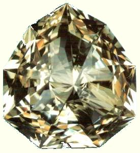
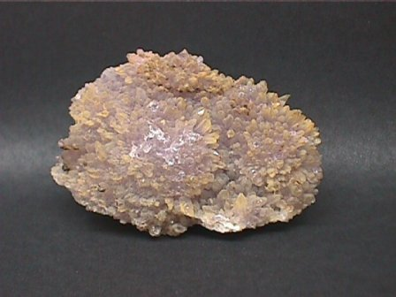
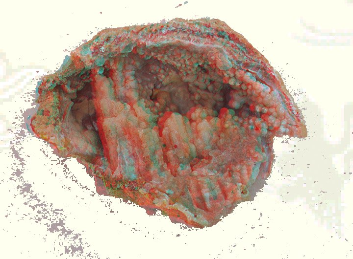
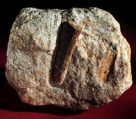
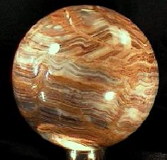
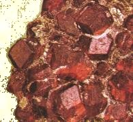
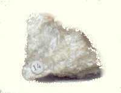
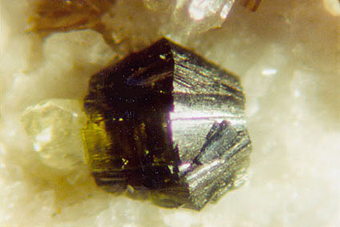

Fleurs minérales
vu le 27 juillet 2003
Plan : rubis - saphir - émeraude - diamant - topaze - améthyste - péridot - citrine - tourmaline - lapis-lazuli - aigue-marine - calcédoine - chrysobéryl - diopside - dolomie - épidote - fluorite - idocrase - onyx - opale - quartz - serpentine - staurotide - zircone - grenat - turquoise - talc - schistes - ardoise - phyllade - chlorite - amphibole -
PréambuleLe lecteur verra ci-dessous la liste des pierres précieuses étudiées dans ce site, sous leurs rapports avec l'alchimie ainsi que certains minéraux dont l'importance est fondamentale. Le titre de la section « fleurs minérales » est générique et veut simplement montrer que les fleurs ou concrétions minérales sont des produits cristallisés qui sont essentiellement dus au métamorphisme des roches [cf. Daubrée et Delesse]. Rappelons notre hypothèse de travail sur l'alchimie : partis de la poterie, du verre, des teintures minérales, du feu, certains artistes ont vu se développer dans leurs creusets des matières cristallines qui avaient le pouvoir de rayer le verre. D'autres ont vu apparaître des soufflures sur des faïences, etc.
Toute une littérature s'est développée sur les vertus occultes, les mirabilia, attribuées aux pierres précieuses ou aux gemmes fines, voire communes. Cette littérature est rassemblée dans des recueils appelés lapidaires et dont nous avons déjà donné un exemple avec la section des Lapidaires chinois. C'est avec Théophraste que s'est développé, surtout, la géologie scientifique chez les Grecs. On lui attribue le Traité des pierres [E.R. Caley, J.F.C. Richard, Théophrastus on stones. Introduction. Greek Text. English translation and commentary, Columbus, Ohio, 1956 ; D.E. Eichholtz, Theophrastus de Lapidibus, Oxford, 1965]. On lui attribue aussi des traités Sur les métaux, Sur le sel, le nitre, l'alun, Sur les pétrifications, Sur le flux de lave en Sicile. De façon générale, la croyance aux vertus magiques des gemmes est aussi vieille que l'humanité : elle se retrouve en Egypte [M. Beaulieu-Nivet, la valeur magique des pierres précieuses dans l'ancienne Egypte, thèse Paris, Ecole du Louvre, 1938] et en Mésopotamie [G.G. Boson, les métaux et les pierres dans les inscriptions assyro-babyloniennes, Munich, 1914]. Sa résurgence à l'époque hellénistique semble se raccorder avec le déclin du rationalisme dans les sciences naturelles [A.J. Festugière, la Révélation d'Hermès Trismégiste, t. I, l'astrologie et les sciences occultes, Les Belles Lettres, réed. 1990]. C'est là où nous retrouvons l'alchimie et sa séparation, dès son origine d'ailleurs, en un courant positif, le travail sur les teintures métalliques et la cuisson de l'argile et un courant entièrement chimérique qui a occulté pour ainsi dire le courant positif, basé sur le rêve des transmutations métalliques. Ces lapidaires s'organisent en plusieurs courants, d'ailleurs intriqués, où R. Halleux et J. Schamp [Les Lapidaires Grecs, Les Belles Lettres, 1985] voient, entre autre, un courant magique véhiculé par des apocryphes oriantaux, qui se rapproche d'un courant astrologique [non moins chimérique] et enfin, celui qui nous intéresse le plus, un courant allégorique, à connotation judéo-chrétienne. C'est à Xénocrate d'Ephère, fils de Zénon, semble avoir écrit plusieurs fois sur les pierres : Pline le cite sur les lieux d'origine de l'obsidienne ; Xénocrate aurait affirmé qu'à Chypre et en Asie, le cristal de roche était arraché du sol par le soc de la charrue [Pline, Hist. Nat., XXXVII, 25]. Saint Jérôme conserve, de Xénocrate, un chapitre sur le diamant et Origène conserve le titre de liqognwmwn « le connaisseur de pierres » [c'est-à-dire le joailler expert] et une description de la topaze, découverte par les Troglodytes d'une île de la mer Rouge. La présence dans le traité de Xénocrate d'une allusion à la rouille du fer [ioV sidhrou] est d'un haut intérêt car il semble que le Lapidaire s'étendait à la matière minérale. Xénocrate, selon R. Halleux, ne serait pas l'auteur original et son oeuvre serait, en fait, une compilation où l'on retrouverait, notamment, des extraits de Bolos de Mendès, de Zoroastre, etc. Nous ne pouvons développer davantage dans le cadre de cette section et renvoyons le lecteur à l'ouvrage de R. Halleux et J. Schamp. Il y trouvera le Lapidaire Orphique, les Kérygmes lapidaires attribués à Orphée; de Socrate et Denys, Sur les Pierres ; le Lapidaire Nautique et, enfin, le Damigéron-Evax.
¯
add_chevreul_hoefer Ariadne atalanta_xv atalanta_xx atalanta_xxiv char chimie_alchemy choses_nat_supernat compendium cosmopolite_0 cosmopolite_1 cristallogenie cyliani emblemes etain fig_hier fontenay gemmes generation_metaux humide_radical idee_alchimique idee_alchimique_2 idee_alchimique_3 idee_alchimique_5 imitat_prec index index2 introgenerale introitus laboratoire_2 laboratoire_3 lapid_chin_grecque lexique_essai liber_artephius limoj_triomph loysel_2 Matiere Merc_nat monade_dee mutus_liber mylius oeuvre oeuvre_saturne origine_alchimie philalethe_6 prima_materia reincrud revelation_basile Ripley songe_verd soufre St_Gregoire_Vievre symb_dir_prim synesius Table_hermes toyson traite_sel verbum phil_met_trev donum_dei atalanta_xxxi atalanta_xxx atalanta_xliii atalanta_xlii atalanta_xl daubree_delesse zodiaque_alchimique calid_morien
Ariadne atalanta_xxiv cambriel char chevreul_hoefer_3 chimie_alchemy choses_nat_supernat compendium cosmopolite_0 cosmopolite_1 etain fig_hier fontenay gemmes generation_metaux heraldique idee_alchimique idee_alchimique_2 idee_alchimique_3 imitat_prec index2 intro_alchimie laboratoire_2 laboratoire_3 lapid_chin_grecque lexique_essai Merc_nat oeuvre origine_alchimie plan_alchimie prima_materia reincrud revelation_basile soufre St_Gregoire_Vievre Table_hermes toyson atalanta_xl atalanta_xxxv zodiaque_alchimique
Ariadne atalanta_xxiv atalanta_xxv bnf_manus_alch cambriel char chimie_alchemy choses_nat_supernat cosmopolite_0 cosmopolite_1 etain fig_hier fontenay gardes_corps gemmes generation_metaux heraldique histoire_chevreul1 histoire_chevreul2 humide_radical idee_alchimique idee_alchimique_2 idee_alchimique_3 imitat_prec intro_alchimie lapid_chin_grecque lexique_essai liber_artephius Matiere Merc_nat mutus_liber origine_alchimie philalethe_6 plan_alchimie prima_2 prima_materia reincrud revelation_basile soufre St_Gregoire_Vievre symb_dir_prim Table_hermes teinture toyson vitriol delesse_1 atalanta_xlii atalanta_xxxvii

alch_lorraine Ariadne atalanta_vii atalanta_xv atal_vii cambriel chevreul_hoefer_2 chimie_alchemy choses_nat_supernat compose cosmopolite_0 cosmopolite_1 cyliani ebelmen_2 etain fontenay gardes_corps gemmes generation_metaux humide_radical idee_alchimique idee_alchimique_2 idee_alchimique_3 idee_alchimique_4 imitat_prec laboratoire_2 lapid_chin_grecque limoj_triomph loysel_1 loysel_2 Matiere Merc_nat origine_alchimie prima_materia reincrud revelation_basile songe_verd soufresulf_potasse Table_hermes toyson verbum atalanta_xxx delesse_1 daubree_delesse daubree_delesse_2 calid_morien notes_protee
Ariadne cambriel chimie_alchemy choses_nat_supernat cosmopolite_0 cosmopolite_1 etain fig_hier fontenay gemmes heraldique humide_radical idee_alchimique idee_alchimique_2 idee_alchimique_3 idee_alchimique_5 imitat_prec intro_alchimie laboratoire_2 laboratoire_3 lexique_essai liber_artephius Merc_nat origine_alchimie ortho philalethe_6 prima_materia reincrud revelation_basile soufre toyson atalanta_xxxi delesse_1 atalanta_xliii atalanta_xl daubree_delesse daubree_delesse_2 atalanta_xxxiv delesse_2 notes_protee
Ariadne char chimie_alchemy cosmopolite_1 etain fig_hier fontenay gardes_corps gemmes generation_metaux heraldique humide_radical idee_alchimique imitat_prec intro_alchimie laboratoire_2 lapid_chin_grecque lexique_essai Matiere Merc_nat origine_alchimie prima_materia reincrud revelation_basile soufre atalanta_xlii
atalanta_xxv atalante_v chimie_alchemy compendium ebelmen ebelmen_2 etain fig_hier gemmes imitat_prec intro_alchimie laboratoire_3 lapid_chin_grecque lexique_essai Matiere Merc_nat ortho reincrud revelation_basile soufre symb_dir_prim delesse_1 daubree_delesse daubree_delesse_2 atalanta_xxxiv notes_protee

Ariadne chimie_alchemy cosmopolite_1 desire fontenay imitat_prec Matiere oeuvre Ripley songe_verd tourbe toyson traite_sel phil_met_trev donum_dei
atalanta_xxiv chimie_alchemy cosmopolite_1 fontenay generation_metaux intro_alchimie laboratoire_2 lexique_essai Merc_nat reincrud soufre delesse_1 daubree_delesse daubree_delesse_2 atalanta_xxxv delesse_2 notes_protee
add_chevreul_hoefer atalanta_xxiv chimie_alchemy cosmopolite_0 fig_hier fontenay histoire_chevreul3 humide_radical idee_alchimique idee_alchimique_4 lexique_essai Merc_nat monade_dee origine_alchimie plan_alchimie prima_materia soufre symb_dir_prim delesse_2
chimie_alchemy etain fig_hier imitat_prec Merc_nat prima_materia reincrud

cosmopolite_1 gemmes imitat_prec intro_alchimie laboratoire_2 Merc_nat mylius origine_alchimie soufre daubree_delesse_2 zodiaque_alchimique
chimie_alchemy imitat_prec lexique_essai reincrud revelation_basile notes_protee

ebelmen_2 heraldique Merc_nat daubree_delesse_2
cosmopolite_1 ebelmen ebelmen_2 etain humide_radical idee_alchimique_5 intro_alchimie lapid_chin_grecque lexique_essai Matiere Merc_nat plan_alchimie reincrud soufre talc atalanta_xxx delesse_1 atalanta_xliii daubree_delesse daubree_delesse_2 plan_delesse delesse_2 notes_protee
atalanta_xxiv idee_alchimique_5 lexique_essai Merc_nat plan_alchimie soufre delesse_1 daubree_delesse daubree_delesse_2 atalanta_xxxv plan_delesse delesse_2
atalante_iv chimie_alchemy fig_hier heraldique humide_radical idee_alchimique_4 intro_alchimie lexique_essai loysel_1 reincrud revelation_basile symb_dir_prim
etain laboratoire_3 lexique_essai Matiere Merc_nat plan_alchimie soufre delesse_1 daubree_delesse atalanta_xxxv delesse_2

atalanta_xvi chimie_alchemy cosmopolite_1 fig_hier gardes_corps heraldique idee_alchimique lexique_essai origine_alchimie revelation_basile soufre daubree_delesse_2 zodiaque_alchimique
Ariadne chevreul_hoefer_2 chimie_alchemy elucidation emblemes fig_hier generation_metaux imitat_prec laboratoire_2 lapid_chin_grecque lexique_essai loysel_2 Merc_nat mylius plan_alchimie plan_huginus prima_materia reincrud soufre toyson daubree_delesse daubree_delesse_2
alch_lorraine atalanta_xv atalante_iv aventurine cambriel char chevreul_hoefer_2 chimie_alchemy compendium cosmopolite_1 cristallogenie ebelmen ebelmen_2 etain fig_hier fontenay gemmes generation_metaux heraldique idee_alchimique idee_alchimique_2 idee_alchimique_3 imitat_prec laboratoire_2 laboratoire_3 lexique_essai loysel_1 loysel_2 Merc_nat mylius origine_alchimie philalethe_6 philalethe_7 plan_alchimie prima_materia reincrud revelation_basile soufre verbum delesse_1 atalanta_xlii daubree_delesse daubree_delesse_2 plan_delesse delesse_2 notes_protee
atalanta_xxiv cosmopolite_1 gardes_corps imitat_prec lexique_essai Merc_nat plan_alchimie reincrud revelation_basile soufre talc tourbe atalanta_xxxi delesse_1 atalanta_xliii daubree_delesse daubree_delesse_2 atalanta_xxxv atalanta_xxxii zodiaque_alchimique plan_delesse delesse_2 notes_protee
atalante_iii chimie_alchemy imitat_prec lexique_essai Merc_nat reincrud talc delesse_1 daubree_delesse daubree_delesse_2 atalanta_xxxv notes_protee
chimie_alchemy etain gemmes imitat_prec lexique_essai Merc_nat reincrud soufre atalanta_xxx delesse_1 daubree_delesse_2

atalanta_xxiv char chevreul_hoefer_2 chimie_alchemy choses_nat_supernat cosmopolite_0 cosmopolite_1 etain fig_hier fontenay gemmes heraldique idee_alchimique_5 imitat_prec intro_alchimie lexique_essai limoj_triomph Merc_nat mutus_liber origine_alchimie plan_alchimie reincrud revelation_basile soufre symb_dir_prim delesse_1 atalanta_xliii atalanta_xlii daubree_delesse daubree_delesse_2 atalanta_xxxv plan_delesse delesse_2
Ariadne atalanta_fugiens atalante_i chevreul_hoefer_2 generation_metaux imitat_prec lapid_chin_grecque lexique_essai Merc_nat origine_alchimie revelation_basile songe_verd soufre

Ariadne atalanta_fugiens atalanta_xxii atalanta_xxiv atalante_iii atalante_xi char chimie_alchemy cosmopolite_0 cosmopolite_1 fontenay heraldique huginus humide_radical lapid_chin_grecque limoj_lettre limoj_triomph Lumiere_tenebres Matiere Merc_nat miroir_bacon prima_materia reincrud revelation_basile soufre sulf_potasse symb_dir_prim Table_hermes verbum delesse_1 atalanta_xliii daubree_delesse daubree_delesse_2 atalanta_xxxvii atalanta_xxxv delesse_2
atalanta_xxv atalante_iv chevreul_hoefer_3 chimie_alchemy compendium cosmopolite_0 emblemes etain fig_hier fontenay generation_metaux heraldique idee_alchimique_2 imitat_prec index2 intro_alchimie laboratoire lexique_essai loysel_1 Merc_nat mutus_liber mylius philalethe_5 philalethe_6 pontanus prima_materia reincrud St_Gregoire_Vievre symb_dir_prim talc verbum vitriol atalanta_xxx delesse_1 daubree_delesse daubree_delesse_2 atalanta_xxxv calid_morien delesse_2
Ariadne chimie_alchemy Matiere prima_materia salverte_4 verbum delesse_1 daubree_delesse daubree_delesse_2
Ariadne Matiere prima_materia verbum daubree_delesse daubree_delesse_2

alch_lorraine chimie_alchemy fig_hier gardes_corps Merc_nat philalethe_6 plan_alchimie soufre St_Gregoire_Vievre talc teinture verbum delesse_1 atalanta_xliii daubree_delesse daubree_delesse_2 atalanta_xxxvii atalanta_xxxv plan_delesse delesse_2
atalanta_xxiv atalante_iiiheraldique imitat_precMerc_nat reincrudtalc delesse_1daubree_delesse daubree_delesse_2atalanta_xxxv delesse_2